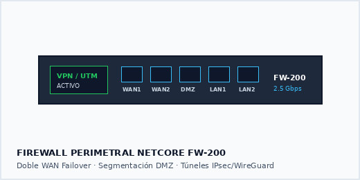

SWITCH GESTIONABLE L3 NETCORE SW-48G-POE+
Conmutador en formato 1U con enrutamiento estático y OSPF, soporte VLAN 802.1Q, RSTP y gestión por SSH y SNMPv3.
895,00 € (IVA no incl.)
Ver ficha técnicaEntregamos nuestros switches y cortafuegos con la configuración cargada por consola: VLANs 802.1Q, asignación de puertos trunk y access, enlaces agregados LACP y reglas iniciales de filtrado.
Conmutador en formato 1U con enrutamiento estático y OSPF, soporte VLAN 802.1Q, RSTP y gestión por SSH y SNMPv3.
895,00 € (IVA no incl.)
Ver ficha técnica
Cortafuegos para sedes corporativas con balanceo multi-WAN, segmentación de red interna/DMZ y VPN IPsec o WireGuard.
640,00 € (IVA no incl.)
Pedir presupuesto| Producto | Características | Alcance | Precio |
|---|---|---|---|
| TRANSCEPTORES ÓPTICOS SFP+ 10GBASE-SR | 10 Gbps Multimodo OM3/OM4 (850 nm) | 300 m | 38,00 € |
| TRANSCEPTORES ÓPTICOS SFP+ 10GBASE-LR | 10 Gbps Monomodo OS2 (1310 nm) | 10 km | 54,00 € |
| CABLE DAC DIRECT ATTACH SFP+ 3M | 10 Gbps cobre pasivo para interconexión en rack | 3 m | 22,00 € |